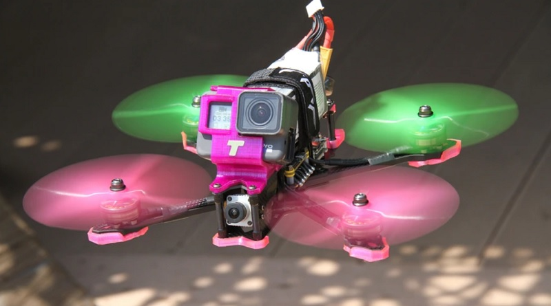

FPV Nedir?

FPV açılımı nedir? FPV veya First Person View, drone kullanmaya başlayaların veya Tübitak
Drone Projelerinde / Teknofest Drone Yarışmalarında drone yapmayı kafaya koyan
çılgınların ilk aradığı kelime daha doğrusu abbreviation yani kısaltmadır. Dronun gözünden kamerasından
anlık görüntü aktarımı ile uçuş rotasını veya manzarayı görme kayıt altına alma. Aslında baktığınızda
tüm
kameralı tüm drone modelleri FPV’dir. Ama birisi FPV Drone dediği zaman bilinki bu bir fabrikasyon
tekdüze
bir drone modeli değildir. Pilotunun zeka kabiliyet ve tahayyül kabiliyeti seviyesinde vucut bulmuş bir
quadcopterdir. Rengi pervanesi frame tasarımı hatta motorları tamamen pilotunu tasvir eder.